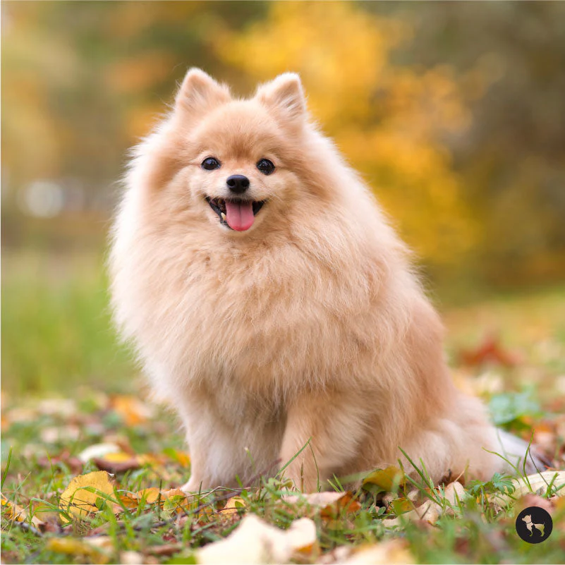

The Art of Selective Listening
Call her name once and she will glance up, blink, and return to staring out the window. Call her name a second time, in the tone that means treats are involved, and she will arrive within 1.2 seconds flat. This is not disobedience. This is editorial discretion.
Trainers will tell you pomeranians are highly intelligent and easy to teach. What they leave out is that intelligence and cooperation are not the same skill. She has learned every command you've ever taught her. She has simply decided which ones are worth her time today, and the answer changes hourly.

Comments